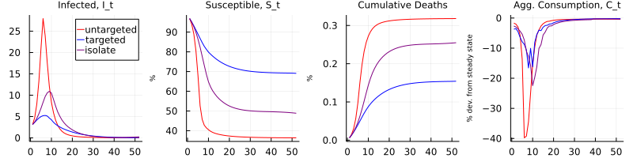

Replication of Chari, Kirpalani, and Phelan (2021)
This project was conducted as a final assignment for the PhD course Numerical Methods at Bocconi University in Fall 2021.
This package replicates the main figures of Chari, Kirpalani, and Phelan (2021): "The hammer and the scalpel: On the economics of indiscriminate versus targeted isolation policies during pandemics", published in the Review of Economic Dynamics. The paper is available here, and the original replication material in Matlab here.
The authors develop a theoretical model that combines epidemic transmission and economic outcomes. They study the effect of different government responses, such as quarantining, testing, contact-tracing, and isolation.
Installation
This package is not listed as an official Julia package. If you wish to use it, you may clone this Github repository to your machine. You then have two options:
Use as a package: Start up Julia and go into the package editor by typing ]. Then, type
activate .
instantiateAfter pressing backspace, go back into Julia's standard command mode and type
using HammerScalpelThe functions should now be ready to go.
Use as ordinary code: Play around with the files main.jl or main_parallel.jl, which run the code in sequential and parallelized form, respectively.
Using the package
If you wish run the replication from beginning to end, simply type
solveModel()This will call all necessary functions in the correct order. Specifically, it first computes the no-intervention outcome using nopolicy, and the respective outcomes under the various policies using withpolicy. Then, it plots the evolution of the model under different policies over time using createFig5, createFig6, and createFig7.
Since solving the model may take a while, you have the option to run them more efficiently on multiple CPU cores at the same time. To do so, type
solveModel(nprocs)where nprocs specifies the number of logical cores on your CPU.
If you just want to check my results without running the simulations yourself, you may use stored outcomes that I obtained under default parameters. You can recreate the figures by running
createFig5()
createFig6()
createFig7()Documentation
HammerScalpel.solveModel — FunctionsolveModel(; TT=52, ndims=20, thetai=0.38, thetas=0.0044)
solveModel(nprocs:Int64; TT=52, ndims=20, thetai=0.38, thetas=0.0044)Solve the model for all possible policy choices and replicate Figures 5, 6, and 7 in Chari, Kirpalani, and Phelan (2021). The function calls nopolicy and withpolicy with the relevant keywords, and uses the outputs to generate the figures using createFig5, createFig6, and createFig7.
Arguments:
nprocs::Int64: Optional. If specified, uses the module Distributed for parallelizing computations.TT::Integer: Number of periods.ndims::Integer: Number of grid points in each dimension.thetai::Float: Probability that infected person sends "infected" signal.thetas::Float: Probability that non-infected person sends "infected" signal.
HammerScalpel.nopolicy — Functionnopolicy(TT=52)Simulate the model in Chari, Kirpalani, and Phelan (2021) for TT periods under no government response. The output is a Dict containing the necessary variables and time-series for generating the figures.
HammerScalpel.withpolicy — Methodwithpolicy(policy; TT=52, ndims=20, thetai=0.38, thetas=0.0044)
withpolicy(policy, nprocs; TT=52, ndims=20, thetai=0.38, thetas=0.0044)Solve the model under a user-specified government policy. In all cases, the government quarantines individuals that are known to be infected. The output is a Dict containing the necessary variables and time-series for generating the figures.
Arguments:
policy::String: Label for the government policy. Takes valuesnotest: no testing at all.untargettest: random testing.targettest: targeted testing under access to contact-tracing technology.isolate: no testing, but isolation of certain fraction of population.
nprocs::Int64: Optional. If specified, uses the module Distributed for parallelizing the computations. Requires prior setup ofnprocsworkers.TT::Integer: Number of periods.ndims::Integer: Number of grid points in each dimension.algorithm: NLopt optimization algorithm.thetai::Float: Probability that infected person sends "infected" signal.thetas::Float: Probability that non-infected person sends "infected" signal.
HammerScalpel.createFig5 — MethodcreateFig5(noint, notest, untarget)
createFig5()Replicate Figure 5 in Chari, Kirpalani, and Phelan (2021). If no arguments are provided, then stored results obtained with default parameters are used.
Arguments:
noint::Dict: Output fromnopolicy.notest::Dict: Output fromwithpolicy(::String)with policynotest.untarget::Dict: Output fromwithpolicy(::String)with policyuntarget.
HammerScalpel.createFig6 — MethodcreateFig6(notest, untarget, target)
createFig6()Analogous to createFig5.
HammerScalpel.createFig7 — MethodcreateFig7(untarget, target, isolate)
createFig7()Analogous to createFig5.
Implementation details
Optimization algorithm: The authors originally use the algorithm SQP for maximizing the Bellman equation in each iteration, which in this case requires approximating gradients and Hessian. For some policies, the NLopt algorithm LN\BOBYQA_ finds the same solution with greater speed. Therefore, although the replication results hold when using SQP everywhere, I use LN\BOBYQA_ when applicable to improve speed.
Dimensionality: The authors originally use 40 grid points for each control variable. In this replication, I reduced them to 20 for computational efficiency, which is why some of the time series look a bit ragged.
Inconsistencies: In my replications of Figures 6 and 7, the time series for R~0~ features a sharp increases for policies "targeted" and "isolate" around T=40 and T=50, respectively, which are not present in the published paper. I verified that these inconsistencies are also present in the original Matlab code.